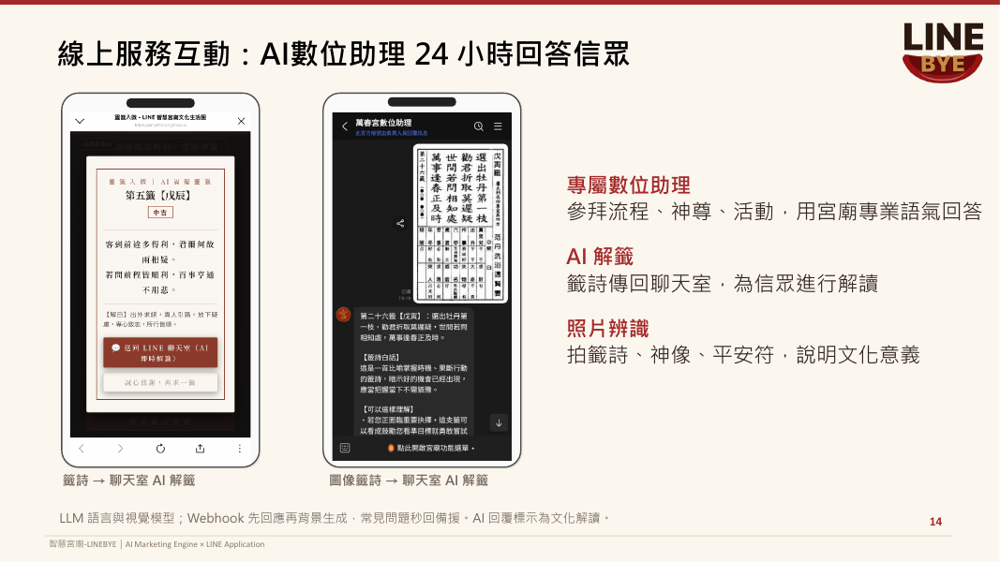
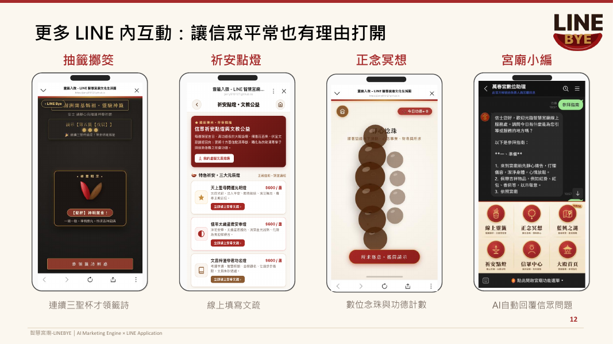
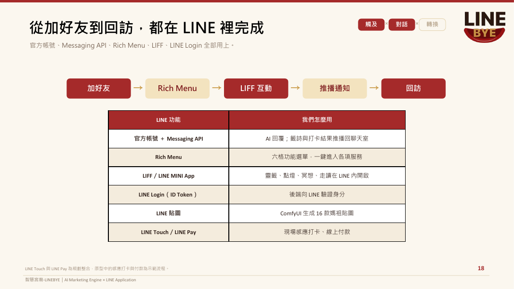

LINEBYE 智慧宮廟
專案簡介
LINEBYE 是我和王彥博組成「LINE趣宮廟」團隊，參加 2026 LINE AI 創新創業競賽的作品，最後獲得冠軍。評審最肯定的是作品的完整性和可行性。
宮廟有故事、有信眾，問答、點燈、活動通知卻多半靠人工，年輕人拜完就離開。LINEBYE 把宮廟服務搬進 LINE，讓一次參拜變成持續的對話：信眾在家也能求籤、點燈、問問題，宮廟也能用 AI 自動產生社群內容。原型以台中萬春宮為首站構想，尚未正式合作。
我負責整體主架構、頁面與功能設計。
使用技術
- LINE 官方帳號 + Messaging API：AI 回覆，籤詩與打卡結果推播回聊天室
- Rich Menu：六格功能選單，一鍵進入各項服務
- LIFF／LINE MINI App：靈籤、點燈、冥想、走讀在 LINE 內開啟
- LINE Login（ID Token）：後端向 LINE 驗證使用者身分
- LLM 語言模型與視覺模型：數位助理問答、AI 解籤、照片辨識
- ComfyUI 工作流：生成 16 款媽祖 LINE 貼圖、自動產生短影音與貼文
運作方式
- 加好友與 Rich Menu：信眾加入宮廟官方帳號後，從六格選單進入線上靈籤、正念冥想、藍興之謎、祈安點燈、信眾中心與大殿首頁。
- 沉浸式求籤：在 LIFF 頁面搖動籤筒抽籤，須連續擲出三個聖筊才能領籤，再把籤文傳回聊天室。
- AI 數位助理：用宮廟的語氣 24 小時回答參拜流程、神尊與活動問題；收到籤詩文字或照片後進行 AI 解籤，也能辨識籤詩、神像、平安符的照片並說明文化意義。Webhook 先回應、再在背景生成答案，常見問題則用預先準備的回答秒回當備援，AI 回覆會標示為文化解讀。
- AI 社群內容：宮廟人員選 2～10 張素材照片，系統自動加上運鏡、旁白、字幕做成短影音，再連同文案與標籤一鍵發布到社群。
- 城市解謎與貼圖：「藍興之謎」讓信眾走進街區找答案、認識廟宇歷史；ComfyUI 生成的媽祖貼圖自動去背、加字，並打包成 LINE 上架規格，加好友即可免費下載。
規劃中的功能：LINE Beacon 推播、LINE Touch 現場感應打卡與 LINE Pay 付款（原型中為示範流程）。貼圖上架與聯名須取得廟方授權。
成果截圖





心得
這次比賽讓我學到，AI 功能要放進使用者本來就在用的地方才會被使用。宮廟的信眾橫跨各個年齡層，大家都會用 LINE，所以我們把所有服務都設計在 LINE 裡完成，從加好友、互動到回訪不需要另外下載 App。
在設計 AI 回覆時，我也發現光是「能回答」還不夠：生成需要時間，所以讓 Webhook 先回應、再在背景產生答案，並準備常見問題的備援回覆；解籤內容也明確標示為文化解讀。這些細節讓作品不只是展示，而是真的可以用。